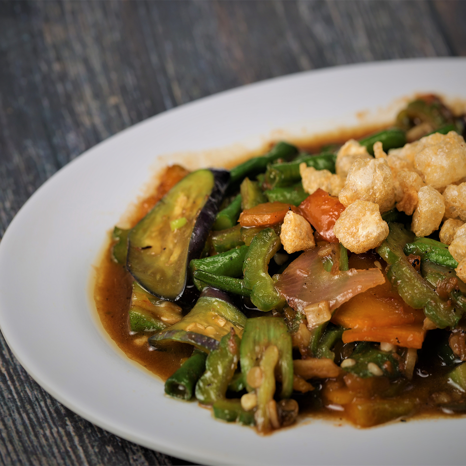

Chicharon
Our chicharon (Crispy Pork Rind) are made from the highest quality imported fresh raw materials that are processed with the best manner of cooking with quality checking procedures and following the high standards of food safety. All served with specially formulated RL Vinegar as dip sauce.

Chicharon with Laman
Made from the highest quality imported fresh Pork Skin with Fat & Meat delicately cooked crispy in pork oil with natural flavoring. The All-Time and Everybody’s Favorite Chicharon variant. Available in Plain, Chili & Super Chili flavors.

Chicharon Bilog
Made from the highest quality imported fresh Pork Belly Skin delicately cooked crispy in pork oil with natural flavoring. Best option to those who can’t decide between w/ Laman and Cocktail. Available in Plain, Chili & Super Chili flavors.

Chicharon Cocktail
Our best-seller chicharon that is made from the highest quality imported fresh Pork Skin without Fat, without Meat delicately cooked crispy in pork oil with natural flavoring. Available in Plain, Chili & Super Chili flavors.

Chicharon Bits
A kid’s delight and the best alternative snack food for cornick, popcorn, peanut, among others. Made from Pork Skin without Fat and Meat that is mechanically grind, cooked crispy and seasoned with natural flavor.

Chicharon with Special Laman
Made of highest quality imported fresh porkloin with fat and much thicker meat compared to chicharon with laman delicately cooked crispy in pork oil sprinkled with natural flavoring.

Chicharon Bituka
This product comes from fresh pork large intestine that were thoroughly cleaned, blanched, and cooked until desired crispiness is obtained.

Chicharon Bulaklak
This product comes from Pork Intestine Railings that were thoroughly cleaned, blanched and cooked until desired quality is obtained. Best to eat fresh from the cooking pan. Available in Plain, Chili & Super Chili Flavors.

Chicharon Crispy Tito
R. Lapid's original crispy product that comes from parts of pork stomach, thoroughly leaned, deep-fried, and mixed with chili powder for total satisfaction of tase and crispiness.
Pinoy Meals
Through the years of developing other products that correlates with the main concept and own specialty comes the idea of putting the R. Lapid's Pinoy Meals into the market that reflect the simple Traditional Filipino recipe and the delightful Filipino touch.

Pork Barbeque
R. Lapid’s Pork Barbecue is made of tender pork shoulder meat marinated in natural spices and sauce. Sliced evenly and skewed on a bamboo stick for grill cooking perfect for your budget that can satisfy your immediate hunger.

Pork Barbeque Meal
R. Lapid`s Pork Barbecue is made of tender pork shoulder meat marinated in natural spices and sauce. Sliced evenly and skewed on a bamboo stick for grill cooking perfect for your budget that can satisfy your immediate hunger.

Chicken Barbeque Meal
R. Lapid's Chicken Barbeque is made of a quarter of fresh chicken marinated in natural spices and sauce with distinctive taste made into perfection. Skewed on a bamboo stick for grill cooking.

Chicharon with Laman Meal
R. Lapid's all-time favorite chicharon variant, pork skin with meat and fat, crisply cooked in pork oil with natural flavoring.

Chicharon Bulaklak Meal
R. Lapid's Pork Intestine Railings processed in the best manner of cooking until desired quality is achieved with its outside crispiness and inside juiciness you can't resist.

Crispy Liempo Meal
R. Lapid's version of Crispy Pork Liempo is made from deluxe cuts of pork belly with less fat cooked deep fried in a special way to create a crispy skin and juicy meat with a combination of luscious flavorful spices.

Fried Chicken Meal
R. Lapid's Crispy Fried Chicken is made from supreme chicken delicately cooked with mixture of natural flavor. Have the outside crisp with tender meat and savory experience up to the bone that suits your chicken satisfaction.

Pork Asado Meal
An original of R. Lapid's that is made from cuts of tender pork meat stewed in specially made sauce in a delicate balance of sweet and spices.

Adobo Meal
Made from cuts of tender pork meat stewed in specially made marinade in a delicate balance of spices and vinegar with pleasurable aroma perfectly Filipino.

Lechong Paksiw Meal
Lechon Paksiw made with chopped roast pork stewed in vinegar, liver sauce, and spices. Perfectly sweet and tangy, it’s a mouthwatering dish you’ll love with steamed rice.

Pork Sisig
Sisig makes a great party appetizer as well as a hearty dinner entree. A delicious combination of juicy pork and tangy, savory and spicy flavors, topped with our very own chicharon, it’s seriously addicting!
Other Products
R. Lapid's products have found acceptance in the market as evidenced by thousands of clients all over the country.

Pakbet
R. Lapid's version of Pinoy vegetable dish, commonly known food served in a unique savory. From the combination of different fresh vegetables with added ingredients and chicharon bits toppings.

Nilagang Talong with Okra
A healthy treat from best pinoy veggies steamed into perfection and paired with our classic "bagoong alamang" dip.

Adobong Kangkong
Enjoy and taste our very own Pinoy Adobong Kangkong. A vegetable rich in dietary fiber and minerals, cooked with special sauce mixture topped with chicharon bits to perfection.

Siopao Asado
The very popular siopao version of R. Lapid's is made of a steamed soft and smooth textured bun stuffed with its filled meaty pork asado cooked in special spices with a touch of secret ingredients served with blended sauce deliciously made snack on-the-go.